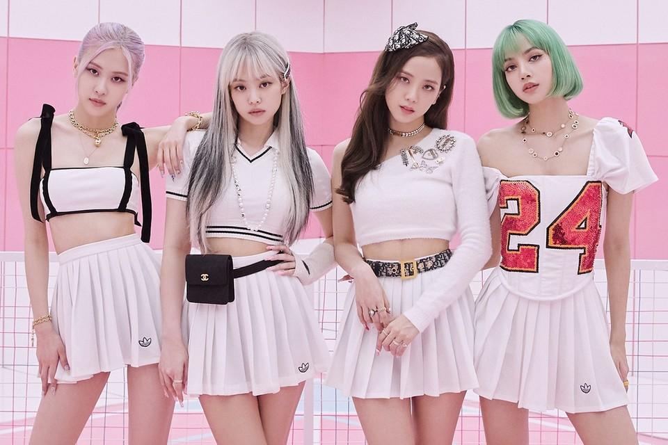

Blackpink (Korean: 블랙핑크; commonly stylized as BLACKPINK or BLΛƆKPIИK) is a
South Korean girl group formed by YG Entertainment,
consisting of members Jisoo, Jennie, Rosé, and Lisa.

The group debuted in August 2016 with their single album Square One, which featured "Whistle" and "Boombayah", their first number-one entries on South Korea's Gaon Digital Chart and the Billboard World Digital Song Sales chart, respectively.
Blackpink is the highest-charting female Korean act on the Billboard Hot 100, peaking at number 13 with "Ice Cream" (2020), and on the Billboard 200, peaking at number two with The Album (2020), which is also the first-ever album by a Korean girl group to sell more than one million copies.[1] They were the first Korean girl group to enter and top Billboard's Emerging Artists chart and to top the Billboard World Digital Song Sales chart three times.[2] Blackpink was also the first female Korean act to receive a certification from the Recording Industry Association of America (RIAA) with their hit single "Ddu-Du Ddu-Du" (2018), whose music video is currently the most-viewed by a Korean group on YouTube.[3] Their 2018 song "Kiss and Make Up", a collaboration with Dua Lipa, was the first by a Korean group to receive a certification from the British Phonographic Industry (BPI)[4] and a platinum certification
from the Australian Recording Industry Association (ARIA).[5]